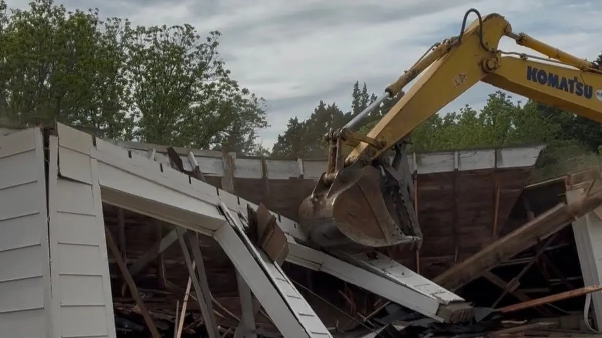

Excavation & Trenching
Site clearing, grading, and excavation for new builds, additions, and utilities across Central Kansas.
Learn MoreStructure demolition, debris removal, and site cleanup for residential and rural properties across Central Kansas. We take it down, haul it off, and leave the site clean.

Old structures on rural Kansas properties create liability, attract pests, and get in the way of what you actually want to build. Mike's Services LLC handles demolition and removal efficiently — we assess the structure, bring the right equipment, and leave you with a clean site ready for whatever comes next.
Request a QuoteDemolition is the controlled takedown of a structure — whether that is an old farmhouse, a deteriorating outbuilding, a collapsed barn, a concrete slab, or a small commercial structure no longer in use. Removal is hauling away the resulting debris so the site is clean and ready for whatever comes next. In Central Kansas, demolition needs come up constantly on rural properties that have accumulated old structures over decades of farm and ranch life.
Old structures become problems for several reasons. They create safety hazards for anyone on the property — especially children. They attract rodents, snakes, and other pests that then spread to other parts of the property. They are a liability on your insurance. And when you are ready to build something new, they are simply in the way. Getting them removed cleanly and efficiently is almost always the right call once the decision is made to stop maintaining them.
The demolition process starts with a site assessment to identify any concerns — utility lines that need to be disconnected, materials that require special handling, proximity to other structures, and the best approach for bringing the building down safely. We handle the takedown, load the debris, and haul it to the appropriate disposal facility. If the foundation needs to be removed or the grade needs to be restored after the structure comes down, we handle that as well.
Mike's Services LLC works on demolition projects of all sizes — from small outbuildings and sheds to larger farmhouses and commercial structures. We give you a clear quote before we start and a clean site when we finish.
Demolition and removal services from Mike's Services LLC include:
Mike's Services LLC provides demolition and removal services throughout Central Kansas including Salina, Tescott, Bennington, Minneapolis, Lincoln, Ellsworth, and Abilene. We serve property owners across Saline County, Ottawa County, Lincoln County, Dickinson County, Ellsworth County, and Cloud County. Have a larger project or not sure if we cover your area? Call us and we will give you a straight answer.
Common questions from Central Kansas property owners about demolition.
Permit requirements vary by county and municipality. In rural unincorporated areas of Central Kansas, many demolition projects do not require a permit. Within city limits or for larger structures, a permit is typically required. We help you identify what is needed for your specific project and location before work begins.
Debris is loaded and hauled to an appropriate disposal facility. Some materials like metal can be recycled and we handle that when practical. If you want to salvage specific materials before demolition — lumber, fixtures, equipment — we work around that during the takedown process.
Yes. Concrete foundation and slab removal is a standard part of many demolition projects. We break up and remove the concrete, haul it off, and grade the area so the site is clean and level after we leave.
Before any structure comes down, all utilities — electric, gas, water, and sewer — need to be properly disconnected and capped at the source. We coordinate with the appropriate utility providers and your local county to ensure disconnects are handled safely and in the correct order before demolition begins.
A small outbuilding or shed can be demolished and hauled away in a single day. Larger structures like farmhouses or barns typically take two to four days depending on size, materials, and site conditions. We give you a realistic timeline in the quote based on what we see during the site assessment.
Demolition clears the way — we handle what comes next too.
Site clearing, grading, and excavation for new builds, additions, and utilities across Central Kansas.
Learn More
Precision grading and compaction for building pads, driveways, and new construction sites.
Learn More
Property clearing, pasture clearing, brush removal, and debris hauling for residential and commercial lots.
Learn More
Full septic system installation including excavation, tank placement, drain field, and inspector coordination.
Learn More📄 From the Blog: Demolition Contractor in Salina KS — What to Expect — read the full guide.
📄 From the Blog: Storm Damage Cleanup & Emergency Site Work in Central Kansas — read the full guide.
Tell us what needs to come down and where. We will come out, assess the structure, and give you a clear quote with no surprises.